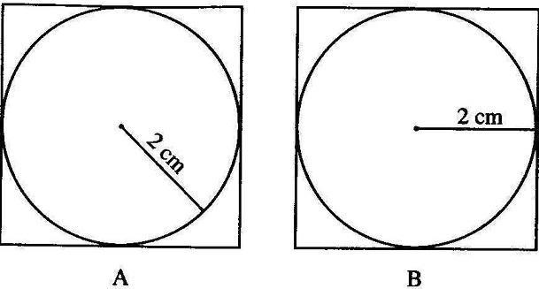
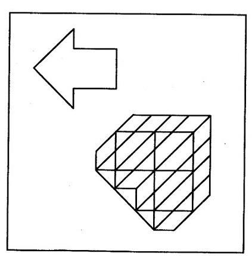
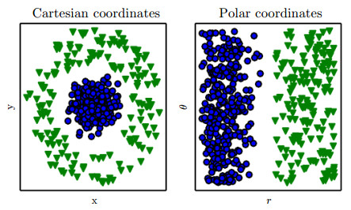

关键词：方法论 | 问题情境 | 交互设计 | 搜索问题
难以预料最近几个月以来泛读过的最有启发性的竟是这样一篇文章：摘自人教版《普通心理学》的《影响问题解决的因素》。
文中提到的七种因素，每一种都可以单独拿出来玩味很久（虽然个人感觉有几种在概念上有重叠）：问题情境、迁移、原型启发、定势、功能固着、动机与情绪状态、个体特征。
之所以觉得很有价值，是因为这篇文章提到的东西与我一直以来感兴趣的两个领域：问题解决/方法论和设计都有关，因为这篇文章，我在两个领域上分别积累的一些概念和想法有了更多关联和统一的可能性。因为目前还没有进行更深层的更整体的思考，这里我就一个个概念，以发散的形式来边写边想（意思是吹到哪里是哪里）。
首先是问题情境，同样的问题在进行不同表述的情况下，难度会变得不同。文中提到的两个例子都很有意思，一个是分别根据A图和B图求正方形面积：

为何A和B产生了不同的解题难度？原文的解释是这样：因为问题情境中的刺激模式与个人的知识结构的接近程度不同。问题中圆的半径与正方形的关系，即正方形边长是圆半径的两倍，是解题的关键。B中的图示使我们很容易得出半径等于正方形边长一半的结论，而A中半径的画法使得我们需要在脑中搜索额外的一个知识点，即圆心到圆边上任何一点的距离都是半径，所以可将半径图示等价转换到B的状态，再得出同样结论。多出的一步思维过程造成了难度不同。这其实具体化了我们平时说的是否“直观”、“直白”的含义。
另一个例子是从复杂的图形中找到一个简单图形（箭头），意在说明不仅过少的信息会提高问题解决的难度，过多的信息也会：

过多的信息是指什么呢？我认为并不是指冗余的信息，而是指无关的信息（最近做spam对definition死抠良久）。例子中箭头以外复杂的线条与找到箭头这个任务是不相关的，这就对问题带来了干扰，我们需要在解决问题的过程中持续抵抗干扰带来的影响，自然问题的难度会上升。
到这里我先来说明一个观点：从某种程度上来讲，所有定义明确的问题都可以视为一个搜索问题。以下是我对这个观点的发散：
解决问题，等于从解决方案的可能性空间中对可行解进行搜索。而问题的解决往往不是直截了当的，往往需要分解成子问题（子问题间的关系可能独立，也可能存在依赖，提到有依赖的情况么，哎呀好想快点开写定势和功能固着）。这里假设问题具有唯一解（如果存在多解甚至是有优劣分别的多解，事情就更复杂了），那么解决所有子问题并最终达到问题的解的过程，就像是在网络（或至少是树形）结构中寻找到一条可以到达解的路径。路径可以有很多条，意味着当你处于某个节点（子问题）时，你的父节点（前置子问题）和子节点（后置子问题）都可能有多个选择。
以下观点可以进一步说明上面的例子：
- 与问题解决相关的信息过少，导致可选的子节点过少。如果更量化地讲，可以认为是很多子节点的预期效用都没有达到你的决策阈值，以至于需要使用近乎暴力搜索的方式去尝试（做过智商测试的童鞋应该都知道我在说什么）
- 不相关信息过多，导致可选的子节点过多，大量的干扰使得你对许多子节点预期的效用差别不显著，选择困难；
- 相关信息过多，也即是我之前所说的冗余，这时不仅能有许多可选子节点，而且冗余的相关信息能有助于区分可选子节点的预期效用大小，有助于找到更短的路径（更快的解决方法）。
原文中关于问题情境一共提出了三个小点，正方形面积和找箭头这两个例子分别解释了后两点，而第一点，关于空间位置，再泛化一点就是元素之间的某种距离（大小、形状、颜色、空间、时间），其实也就是一些可量化的相关关系。
那么问题情境与设计存在什么关联呢？请注意我这里所指的设计，是去掉了一般性理解中有关艺术、美学的那部分概念，而朝可用性（Usability）逼近的“设计”（如果用目前互联网产品设计的分类方法来讲，更偏向交互而非视觉）。对于这一部分设计来说，其目的就是问题的解决。拿软件交互设计而言，其实死磕的就是如何通过各种可交互元素传达出合适的信息，从而为每一功能形成一条最佳路径。当然这个最佳可能是极致的可用，更可能是一些更为复杂的价值函数，比如同时还要考虑软件商的盈利，这使得现实中的交互设计工作非常具有挑战性。
没想到第一个概念就随随便便扯出了这么多，看起来要写个小连载，发散到极致再整合了（内心其实是这样：既然反正要整合，就懒得精加工了嗯），本来还想往machine learning上扯点但暂时有点扯不动了，之后再说吧。话说好久没这样飙过文了（居然只用了一小时多点），一直以来有很多点滴的想法但觉得太浅，又懒得花很多时间死磕某一个，这下倒是发现了一个好的（至少有产出的）产出方式。那么，请期待下一篇《定势和功能固着》（希望不要再产出这么多括号）。
